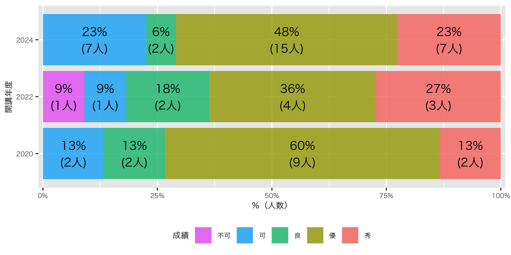
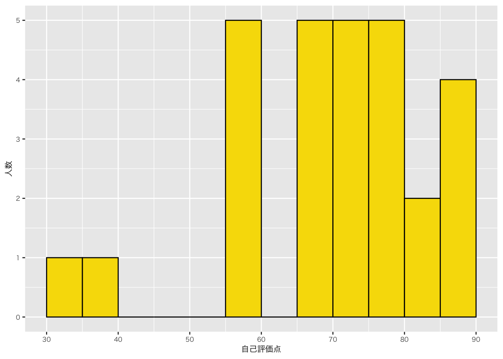
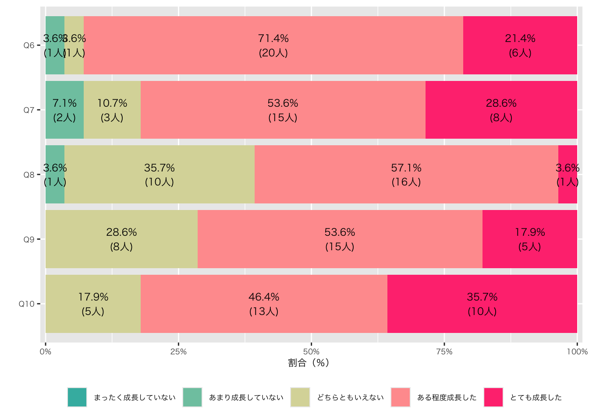
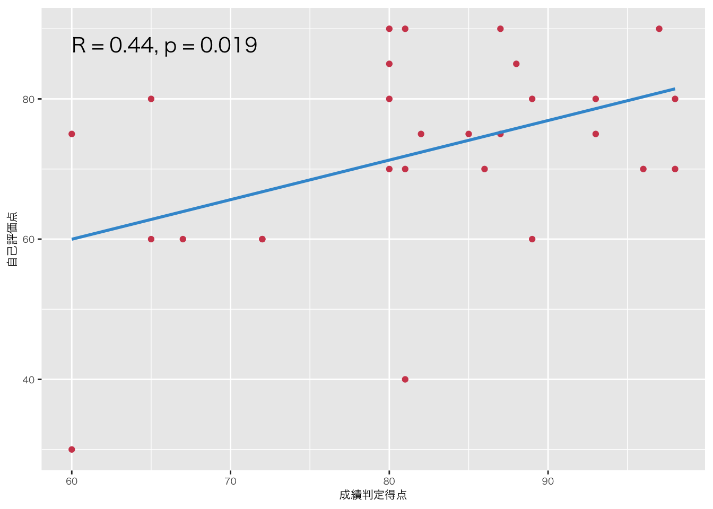

![]()

Ⅰ. 成績評価
1. 成績分布
授業出席日数が規定の日数を満たしていない者、最終成果物が未提出な者などは、集計から除外しています
2020年度、2022年度はすべての授業がオンライン開講でした。2024年度は、オンライン授業4回、対面授業10回（4日間）で開講しました。完全オンライン授業と部分的にオンラインを取り入れた授業では理解力＝成績にある程度、違いが生じると思います。また、2024年度より、1年生も受講できるようになりましたので、2024年度とそれ以前では成績の傾向に差が生じている可能性があります
「秀」は、比率で見た場合、2022年度より少なくはありますが、実数で見た場合、比較的多くの受講生に付けることができました。「優」も多くの学生に付けることができました。「秀」と「優」を合わせた比率は、どの開講年度も同様の傾向であることがわかります。
初回にお話ししたように、この授業は「授業の感想」と「リーディングアサインメント」を提出することを前提に評価を付けています｡したがって、レポートは、実質的に「秀」か「優」のどちらを付けるかの決め手として用いています｡
やや気になる点は、例年「良」が少ないという点です。これは「秀」「優」層と、「可」層で二極化していると見ることができます。今年度に関しては23%（7人）が「可」にとどまっており、最低限の基準に達しているとはいえ、私には努力不足に思えました。原因のほとんどは「授業の感想」と「リーディングアサインメント」の未提出の回数が多いことにありますが、そのような受講生はレポート評価の点数も高くありません。
2. 配点
⑴ 授業の感想
授業の感想は当初の予定（シラバス）通り計8回、学期末授業アンケートを1回実施しました。また当初の案内通り、すべてを期限内に提出した者に+3点加点しました｡小計30点です｡初回の授業で釘を刺したように「楽しかった、勉強になった」などの感想は0点とするようにしていますが、該当者はいませんでした｡
⑵ リーディングアサインメント
リーディングアサインメントも、予定通り、計10回実施いたしました｡1回の提出を3点としています｡小計30点です｡こちらもいい加減なものは0点とする方針ですが、該当者はいませんでした｡
⑶ レポート課題①：芋づる式マップ
芋づる式マップを課すレポートです｡授業内容にかかわる理解力、マップに書かれた情報量、マップの意図などの説明力、独創的な観点の有無の4つ観点から評価しました｡それぞれ順に7点、3点、3点、2点の小計15点としました｡授業理解については4点を基準に、理解力に応じて高低を付けました。全体の平均点は10.87点/15点です｡標準偏差3.17点であり、点数のばらつきは少なかったです。
⑷ レポート課題②：試験問題案
試験の作問を課すレポートです｡授業内容の理解度、説明力、独創性の3つの観点から評価しました｡それぞれ、8点、4点、3点とし、小計15点です｡質的な評価については前項同様です｡平均点は9.39点、標準偏差は3.57でした｡
⑸ ディスカッション（受講態度を含む）
ディスカッションについては、議論をリードした受講生と、必ずしもそうではない受講生など、参加度に濃淡があったかもしれませんが、私の目には全員、活発に議論していたように見えましたので、参加者全員満点（5点×2 10点）を付けました。
⑹ 加点（ボーナス点）
ディスカッション②でグループ内で選出された方には、3点、加点しました。
3. 回答傾向
⑴レポート課題①：芋づる式マップ
私が高く評価したレポートは、授業外での学習内容とこの授業の学習内容がうまく結びついているものであり、かつ、受講生自身の問題関心が強く現れているものです。岩田さんのアンダークラス、片山さんの新自由主義、高橋さんのウェル・ビーイングを高く評価しました。一方で低く評価したレポートは、芋枠や□枠に単語を書いただけで、説明や線のつながりがないものです。そのようなレポートの多くは独自の視点もありませんでした。
⑵ レポート課題②：試験問題案
今年度の受講生の多くのレポートは、知識を確認する問題、図表の読み解きに関する問題、そして自分の意見を考えてまとめる問題をバランスよく組み合わせている点が印象に残りました。岩田さんの賛否をめぐる自由記述のそれぞれについてしっかりと正答例を考えている点、遠藤さんの「高校生の時に知っておきたかったことなどを中心に取り上げる」という観点、田辺さんの「放置できないイシュー」と「放置可能なイシュー」のどちらが正解かで答えが変わる問題」という出題の工夫、原田さんの「男女共同参画が顕著な効果が出なかったことという事実を基に「どうしたら」という疑問を生徒に投げかけることで生徒自身に改善策を考えさせる」という出題意図に感心しました。よくない例は授業で学習した内容を反映しておらず、教科科目の「公民」や「公共」、「政治経済」の学習指導要領をなぞっただけのような試験問題案です。このようなレポートは授業理解を確認できないので、総じて評価が辛くなります。
Ⅱ. 学期末授業アンケート
1. 自己評価点

- Q4. この授業に対するあなたの取り組みを、0点から100点のあいだで自己評価して下さい。
多くの受講生が、自己評価点として70点以上を付けており、よかったと思います。私の認識ともおおむね一致しています（下記の「自己評価点と成績判定得点の関係」も参照下さい）。
2. 到達目標の自己評価（5点尺度）

- Q6. 受講生が、国民主権、国民国家、主権国家体制、国際法、選挙制度、官僚制度を中心とした公民分野の基礎的知識を得て、それを初学者に対してわかりやすく説明することができる。
- Q7. 受講生が、比較政治という手法を用いて、政治の諸現象を初学者に対してわかりやすく説明することができる。
- Q8. 受講生が､政治学の諸概念について､自分なりの視点を加味した､関係図を作成することができる｡
- Q9. 受講生が、国際政治学、比較政治学ならびに公民分野に関わる基本的な資料、文献を読みこなすことができる。
- Q10. 受講生が、1及び2で得た知識を背景に、日々のニュース報道や新聞報道をより深く、また相対的に理解したうえで、自分自身の意見や解釈を、確かな根拠を明示しながら、明快に記述することができる。
ポジティブな評価を示す赤系統の色が全体の多数を占めています。特にQ10で「とても成長した」という回答が多かった点をうれしく思いました。一方で、Q8の芋づる式の自己評価は「とても成長した」という自己評価が低く、これはレポートとして出題しただけであることや、正解が何かわからない点がかかわっているかもしれません。集中講義ではなくセメスター開講であれば、授業期間内でグループワークや発表を繰り返すことで工夫できるのですが、集中講義では難しいのが悩みです。
3. 自己評価点と成績判定得点の関係

成績判定得点と自己評価点は、統計的に有意な（すなわち、偶然の産物ではない）中程度の正の相関があると言えます。つまり、受講生が頑張った／頑張っていないという自己評価と、私の成績評価はある程度、相関関係があると言えます。言い換えれば、受講生が頑張ろうという意識をもてば、成績はあがる可能性があるということです。
4. 自由記述
私が気になった意見を共有いたします。
⑴ 教員になった場合の抱負
これまでの受講態度を反省的に振り返りながら「教員になった際には子どもたちに考えさせるような授業によって子どもたちが普段から能動的に考えて行動していくとができるようにしていきたい」という意見がありました。また、他の教員から最低限、朝のニュースを見るように言われたが、「今回の講義で断片的にニュースを批判的視点を持たず、視聴してしまうことは誤った知識を持たすことに繋がりかねないと思い、授業ではニュースで作り上げられた誤解また誤解を生みださない授業を作っていきたい」という意見も印象に残りました（このような意見は多かったです）。
⑵ 授業趣旨
政治学概論IIは、世界の中の日本といった比較を強く意識したものでした。ある受講生は「世界各国の社会や政治、国民の在り方を比較・関連付けする中で、相互関係のなかからみえてくる日本の立ち位置や政治的 な力量が少しずつ分かるようになったため、相互関係のなかで日本を捉え、新たな知見を得ることができた」と答えてくれました。また「つなぎあわせる力」が身についたという意見も、私が大切にしている点ですので、私にはうれしい意見でした。
⑶ 授業制度
リーディングアサインメントを通してあらためて予習の意味を考えた受講生もいました。「予習を通して疑問になったことや興味を持ったことを講義を聞いて考えを深める、疑問を解決するというサイクルは今後の他の授業でも必要であるので今後も意識していきたい」。私は政治学に限らず、大学の授業においても予習はとても重要だと思っていますので、ぜひ、取り入れられる点があれば、取り入れて欲しいと思います。また、受講生の感想や意見を読める点がとてもよかったという意見もありました。
ディスカッションの時間がもう少しあれば、という意見も大事な意見だと思いました。工夫して、そのようにできればと思っています。
政治学概論IIを先に受講したことを残念に思う意見が何人かからありました。今年度から、概論Iと概論IIが各年開講されることに対する学生への配慮から、概論IIを1年生も受講できるようになりました。私としては概論Iを受講していない学生へも配慮したつもりですが、別科目という位置づけ上、概論Iが基礎的、概論IIが応用的になってしまいます。すみません。もし、概論IIが面白い、あるいは大事だと思った1年生は、ぜひ、来年度開講予定の概論Iも登録下さい（来年度も私が担当する予定です）。今年度と同様、12月にオンライン、2月上旬に対面という構成で行う予定です。
⑷ 政治全般
「政治について友達と一緒に意見を交わすようになった」という意見は予想外ではありましたが、つねづね政治への敷居を下げたいと思っていますので、このような意見はとてもうれしいです。
Copyright
苅谷千尋 2025